MHL · STUDIO · PREVIEW
Design workflows as a diagram. Keep the code as the source of truth.
mhl studio is a desktop IDE for designing and running MHL workflows, in the spirit of a visual workflow designer. You drag states onto a diagram, the diagram and the .mh code stay in sync in both directions, a run streams live onto the same diagram, and the folder can be tested as the MCP server your clients will see. It is optional: the language, the CLI and every server work without it.
01The code is the source of truth
PreviewThe studio never keeps a model of its own. The diagram is drawn from the code, every diagram action becomes a small text edit, and every run is a real mhl run.
- The diagram is a projection. It comes from
mhl graph <file> --stdin, which reports every step, parallel group, route, transition and call with the byte span of the source it came from. - Edits are text edits. A diagram or inspector action rewrites only those spans, as one undoable step in the editor. Comments and formatting elsewhere are never touched.
- A split workflow is drawn whole. A
partialworkflow is graphed withmhl graph --merged, from the file that declares itsentrystep, so every fragment shows in one diagram. Steps from another file are dashed, carry that file's name and are read-only here: double-click one, or its file chip, to open the file and edit it there. Renaming or deleting a step another fragment'sgototargets is refused. - Stages are boxes. A stage — the
stage Nameon apartialfragment's header — is drawn as a titled box around that fragment's steps and parallel groups, in the whole-workflow diagram; agototo the stage lands on the box, and during a run the box takes its steps' status. Double-click a box to show it in the code. - Gates ask for a decision. A step with
pause(reason, decision: T)is labelled Gate · T; a run paused there shows a form built fromT— a select per enum, a checkbox per bool — and Resume with decision answers it. - Editing the code redraws the diagram. While the code does not parse, the diagram keeps the last version that did, read-only, until the code is fixed.
- It ships its own runtime. Each installer bundles the
mhlbinary it was built with — its version is shown at the right of the toolbar — so the language it edits is the runtime it runs, never anmhlon yourPATH.
mhl commandWhat it providesmhl graph --stdin [--merged]nodes, edges, call sites and spans; a partial workflow from all its fragmentsmhl run --dry-run --format jsonthe declared inputs and their types, validated before a runmhl run --format jsonlstreamed step_start / step_end / log / result eventsmhl run --format jsona throwaway one-step program that calls a tool method, written outside the workspacemhl lspdiagnostics, completion, hover, signature help, go-to-definitionmhl serve mcpthe folder served over stdio or Streamable HTTP, exactly as a client sees it02Install
PreviewStudio releases are published on the project's GitHub Releases under their own studio-vX.Y.Z tags, separate from the language's vX.Y.Z releases. Every installer already contains the runtime — nothing else to install.
Go to the download page It picks the right installer for your system.
…_aarch64.dmgdrag mhl studio to Applications…_x64.dmgsame…_x64-setup.exe or .msithe installer, or the MSI package…_arm64-setup.exethe installer (there is no ARM64 MSI).AppImage, .deb, .rpmthe AppImage runs without installingBuild from source
Needs Go (the version in src/mhl-runtime/go.mod), Node 22 and Rust stable — plus WebKitGTK 4.1, GTK 3 and librsvg on Linux.
git clone https://github.com/mh-language/mhl-core-runtime
cd mhl-core-runtime/src/mhl-studio
npm install
npm run tauri dev # builds the bundled runtime, starts the app
npm run tauri build # an installer for this machine03A tour of the window
AvailableOpen a folder with the folder button (⌘O); every .mh file in it is editable, and the studio reopens the last folder on launch. The numbers match the screenshot above.
- Explorer. The folder's
.mh, Markdown, JSON and.envfiles. + creates a file from a template; files also drag onto the diagram — an agent, a prompt, a schema — so the explorer doubles as the toolbox. - States bar. The shapes you can drag onto the diagram, grouped as Flow (Pass, Choice, Parallel), Gate (Human approval) and End (Succeed, Fail).
- Diagram. Laid out automatically from the code, top to bottom, from Start to End. Each step shows one box per agent or tool call it makes. The controls on its right zoom, fit the whole diagram (⇧1), center it (⇧2), or keep it centered after each change.
- Imports card. What the file imports and from where, with how many times each name is used. Click a name to highlight the steps that use it; ↗ opens the file it comes from. Drop another
.mhfile on it to import it. - Code. The
.mhfile, with MHL highlighting and the language server. Typing redraws the diagram. - Inspector. Edits whatever is selected — the workflow, a step, a Choice, a parallel group, or a tool.
- Run panel. The run's execution summary, events, logs and variables (⌘J shows or hides it).
- Run and views. Run starts the workflow; the arrow next to it opens its inputs. Design, Split and Code switch between the diagram, both, and the code alone; the three panel buttons show or hide the files (⌘B), the run panel (⌘J) and the inspector (⌥⌘B). A file with several workflows offers a picker, and + adds a workflow to it.
- Editor | MCP. Swaps the editor for the MCP test bench. A green dot on MCP means its server is running.
⌘+, ⌘- and ⌘0 (Ctrl elsewhere) scale the whole window — diagram, editor and panels together — and the level is remembered, as is which panels are open.
04Files and templates
Available+ in the explorer's header (or on a folder) asks what the new file declares and starts it from a template that already parses and lints clean, its declaration named after the file: flows/review_bot.mh → ReviewBot. New tools, agents and prompts start out exported, so a workflow file can import them.
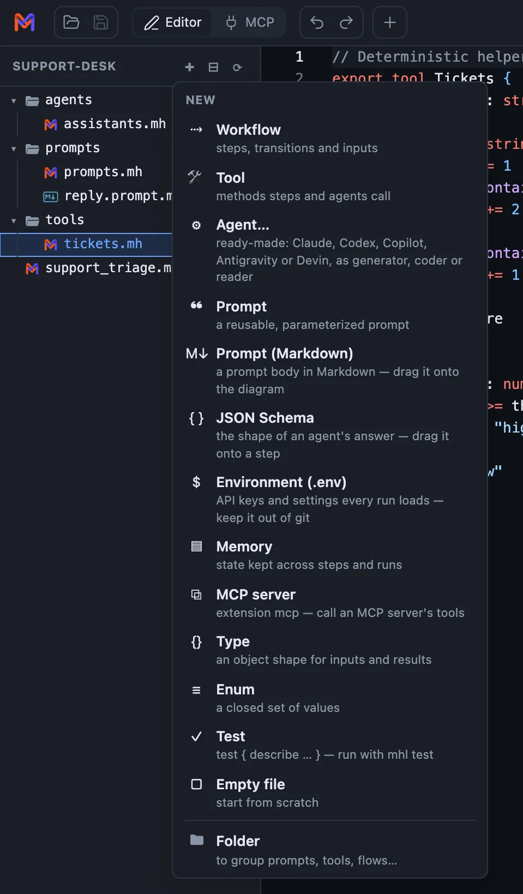
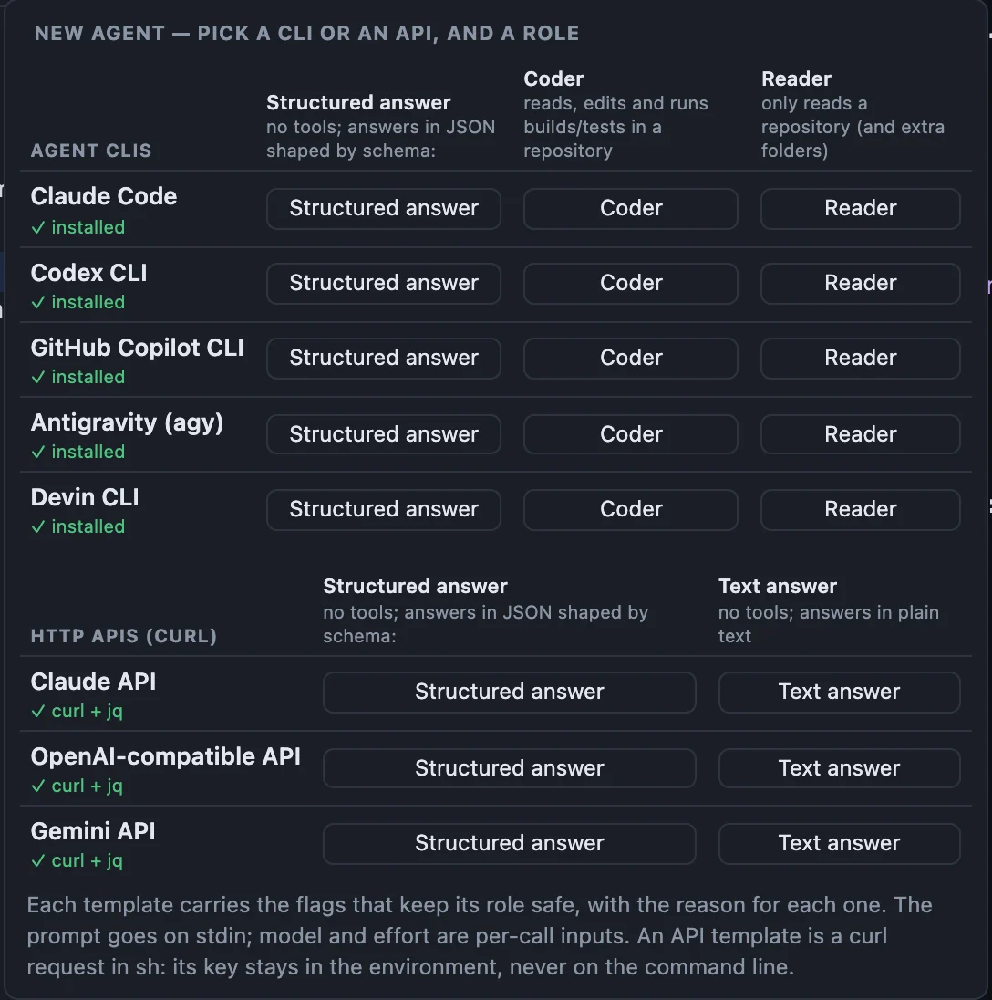
workflow with inputs and stepsopens on the diagramagent for a CLI or an API, in a rolethe prompt goes on stdin; model and effort are per-call inputs; an API key stays in the environment, never on the command lineprompt, or a .md bodya Markdown file drags onto the diagram as a prompt.json answer shapedrags onto a step as an agent call's schema:.gitignore; only the root .env is loaded automaticallymhl testIn the agent picker, each CLI is marked ✓ installed or … not found from your shell's PATH; a missing one is still offered, since the workflow may run elsewhere. Right-click a row for New, Rename and Delete (F2 renames, ⌘⌫ moves to the Trash); drag a row onto a folder to move it, and references to the moved file are rewritten.
05What each shape is in the code
AvailableEvery shape on the diagram is a piece of the language — nothing on it is studio-only.
step Name { … }a Task when it calls an agent or tool — one box per callgoto match value { … }one labelled edge per arm; _ reads "otherwise"route Name(x: T) { … }its own node: callers point at it, its arms leave it. A route no step calls is drawn apart, marked unusedentry route Name(x: T) { … }Start leads straight to it: the run begins by dispatching on the input xparallel Name { step … step … }its own vars on the header; a merge { … } is the bar along its bottompause("…")the run parks there until it is resumedcomplete() / fail("…")edges to End or Failgoto, an arma dashed edge is a fall-through to the next declared step; a label is the arm's pattern or the if guarding a gotostep Name timeout 5m { … }editable in the inspector06Editing on the diagram
AvailableEach action below is a text edit you can undo (⌘Z) like typing. The file is marked unsaved (●) until you save it (⌘S).
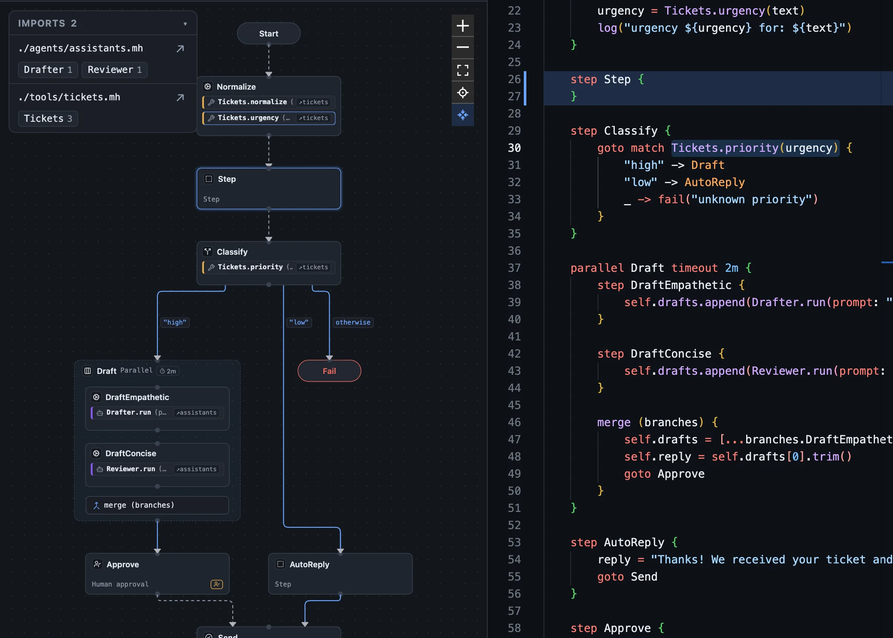
Normalize becomes step Step { } right after it, falling through to Classify.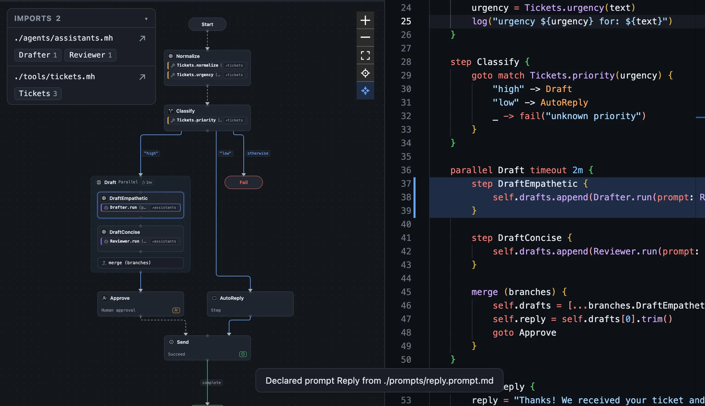
reply.prompt.md dropped on an agent step: the prompt is declared and the call now reads Drafter.run(prompt: Reply(ticket: ticket)).goto match), Parallel, Human approval (pause), Succeed or Failgoto Targetor retargets the step's trailing goto; on a Choice, a new rulegoto, a goto match arm or a route arm; a fall-through ends the step with complete()var reply = Agent.run(prompt: …)for a .mh file that declares one agent; placed before the step's final goto/complete(). Onto empty space: a new step calling itprompt:declares prompt Name(…) from "./file.md"; onto empty space, a new agent stepschema:declaring the schema from the fileimport { Name } from "./file.mh"merged into an existing import of that file, and marks the declaration export in its own file when needed. Dropping a .mh file on the Imports card imports it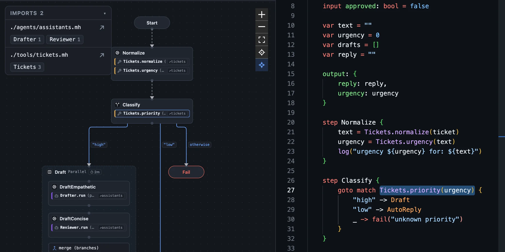
Tickets.priority(urgency) in Classify.07The inspector
AvailableThe right-hand panel edits whatever is selected. Every field writes to the code, and Show code jumps to the selection's source.
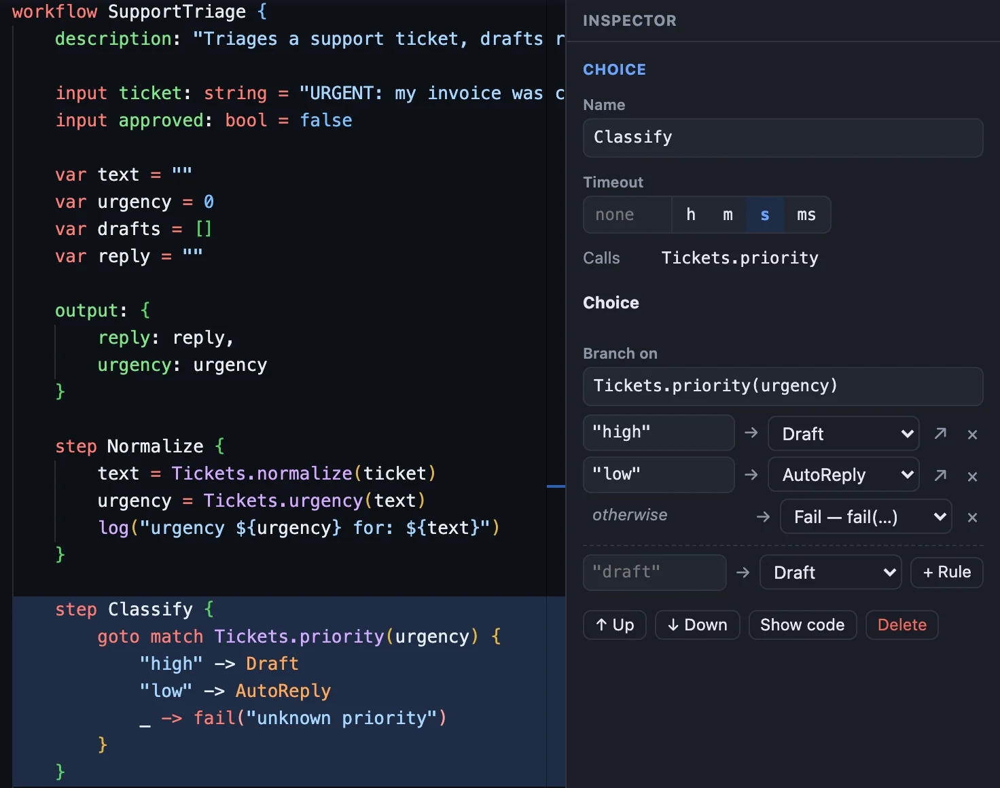
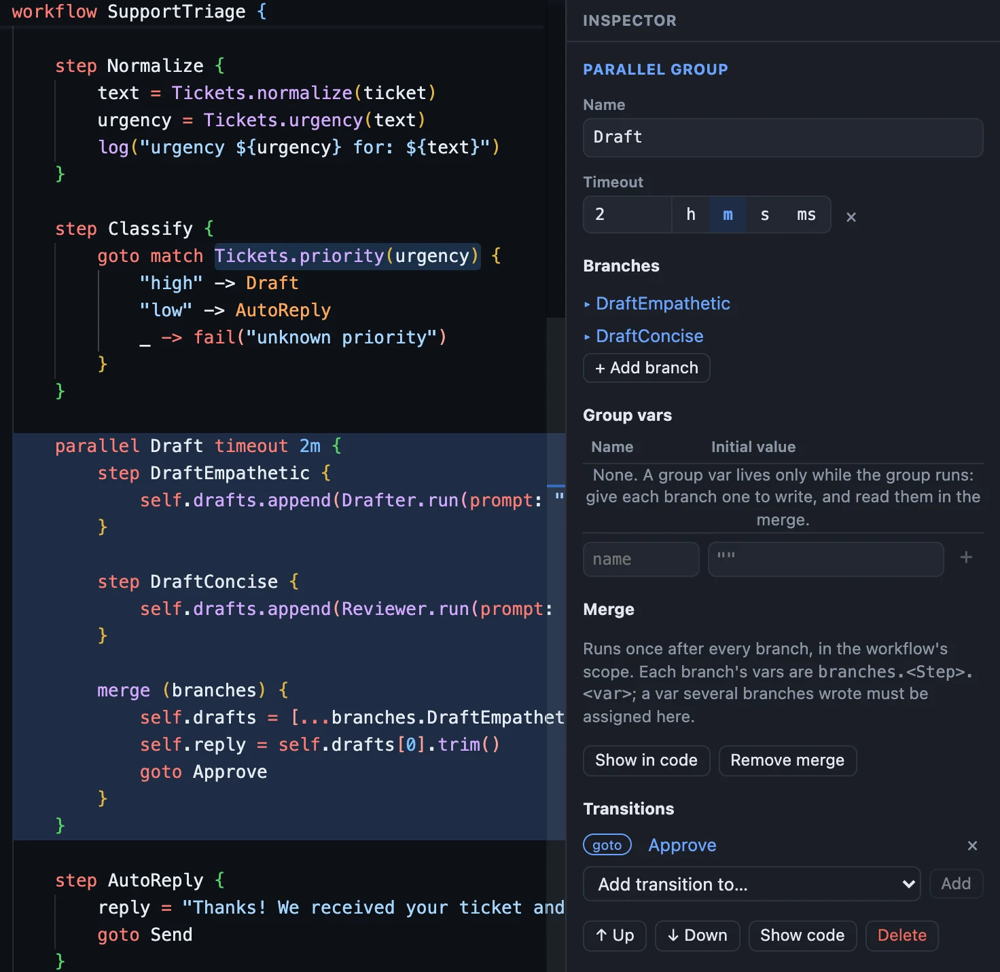
output:, and the file's problems08Building tools
PreviewA tool is a set of methods that steps, agent hooks and other tools call. Create one with + → Tool and the inspector becomes a small tool builder.
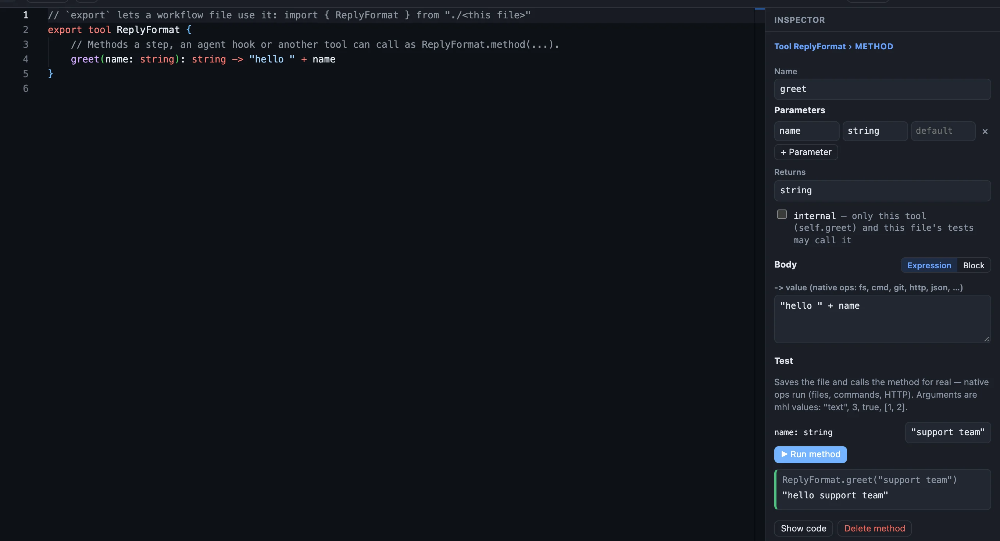
ReplyFormat.greet("support team") through the bundled runtime and shows its result.- The tool. Rename it (its calls in this file are rewritten; files that import it are not), add or delete methods, Show code, Delete tool.
- A method. Its name, parameters (name, type, default), return type,
internal(only the tool itself and this file's tests may call it), and its body — an Expression (-> value) or a Block of statements, where native ops (fs,cmd,git,http,json, …) are available. - Run method. Type the arguments as MHL values (
"text",3,true,[1, 2]). It saves the file and calls the method for real — native ops do run — in a throwaway program outside your folder, so nothing else is written to the workspace.
09The code editor
AvailableA Monaco editor with MHL highlighting and the bundled mhl lsp: diagnostics, completion, hover, signature help and go-to-definition — across the folder's imports.
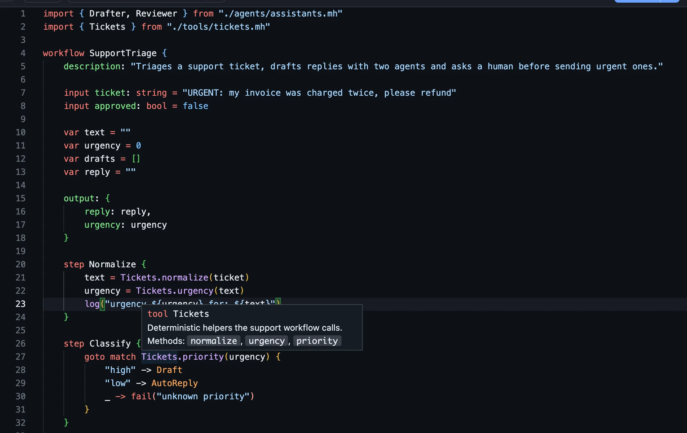
tools/tickets.mh.10Running a workflow
AvailableRun starts a real mhl run of the selected workflow and draws it on the diagram as it goes.
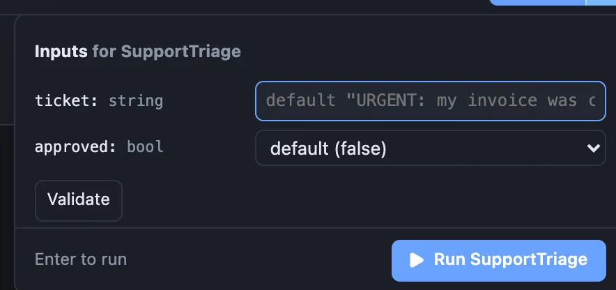
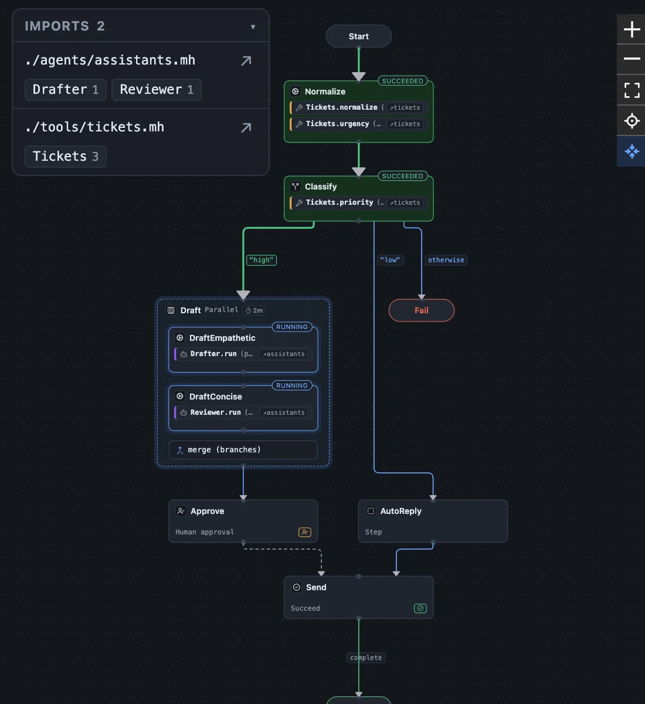
Draft are still RUNNING.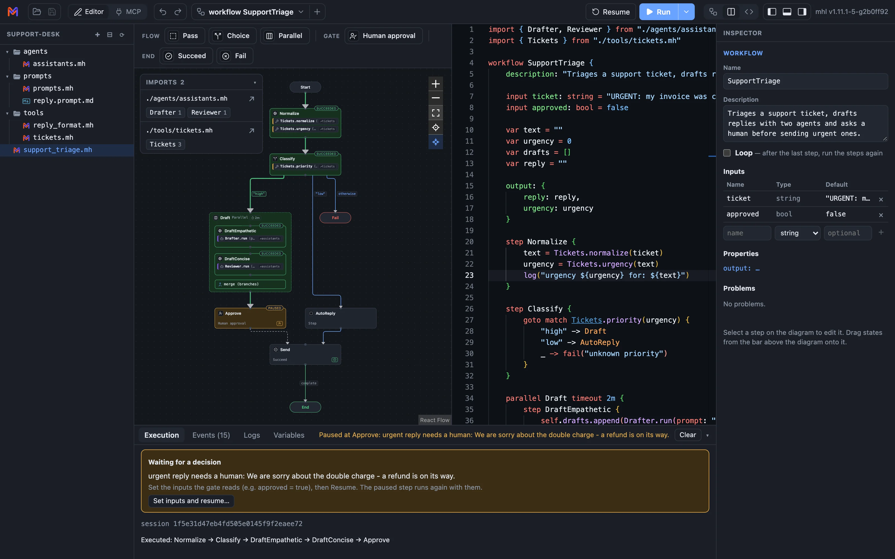
pause("urgent reply needs a human: …") in Approve and waits for a decision.- Pause and resume. A run that reaches
pause("…")stops there, resumable, with its reason in the panel. Set inputs and resume… opens the inputs form: set what the gate reads (hereapproved = true) and Resume — the paused step runs again with them, and the steps before it are skipped, not re-run. - Cancel. A run in flight can be cancelled; it saves a checkpoint you can resume from.
- The run panel. Execution has the session, the steps executed and those skipped on resume; Events every
run_start/step_start/step_endwith its time, step and outcome (goto → Draft,ok · 612 ms); Logs the run's output; Variables its result. Clear clears the execution view.
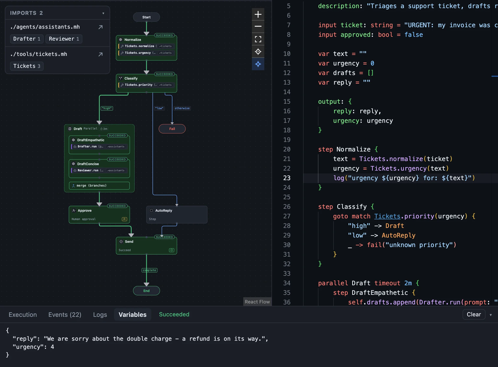
approved = true: the run succeeds and Variables shows its output:.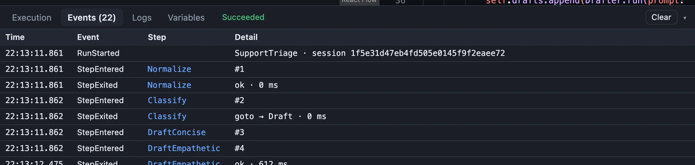
A run from the studio is the same mhl run --format jsonl you can start from a terminal, with the runtime bundled in the app — what you see on the diagram is the runtime's own event stream. Agent CLIs and their API keys come from your login shell's environment, as in a terminal.
11The MCP test bench
PreviewEditor | MCP swaps the editor for a bench that serves the open folder with mhl serve mcp — one tool per workflow, a manifest resource for each — exactly as Claude Desktop, VS Code or any other MCP client would see it. It is laid out like an API client. See Servers for the protocol itself.
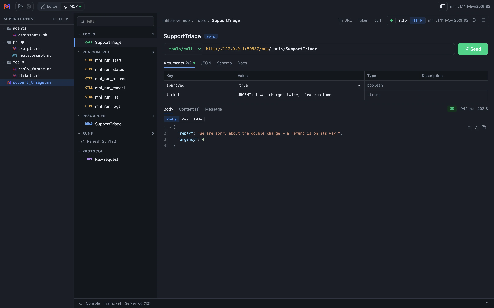
tools/call of the SupportTriage workflow over Streamable HTTP, with its arguments generated from the tool's inputSchema.- Transport. stdio, or HTTP on a free loopback port with a random bearer token. URL, Token and curl copy what another client needs to reach the same server.
- Left: a filterable tree of what the server serves — tools (
CALL), themhl_run_*control tools (CTRL), resources (READ), runs, and a Raw request for any method with any params. - Middle: the request — method, address and Send — then the arguments, as a key/value form generated from the tool's
inputSchema, as JSON, or the Schema and Docs themselves. - Below: the response, with its status, time and size, shown Pretty (highlighted, foldable), Raw or as a Table. A string that holds JSON, such as an agent CLI's raw output, is shown decoded and marked
JSON string.
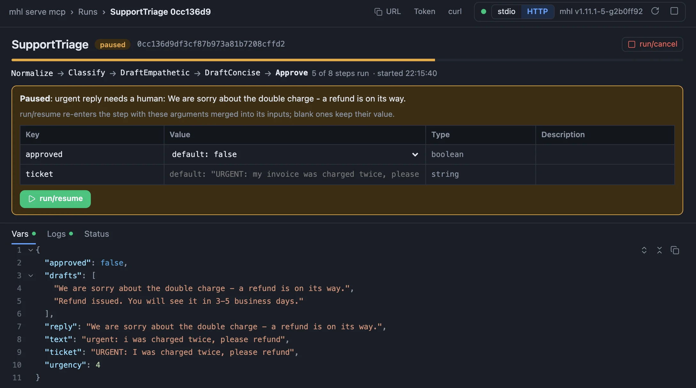
run/start: paused at the gate, with run/resume and run/cancel one click away.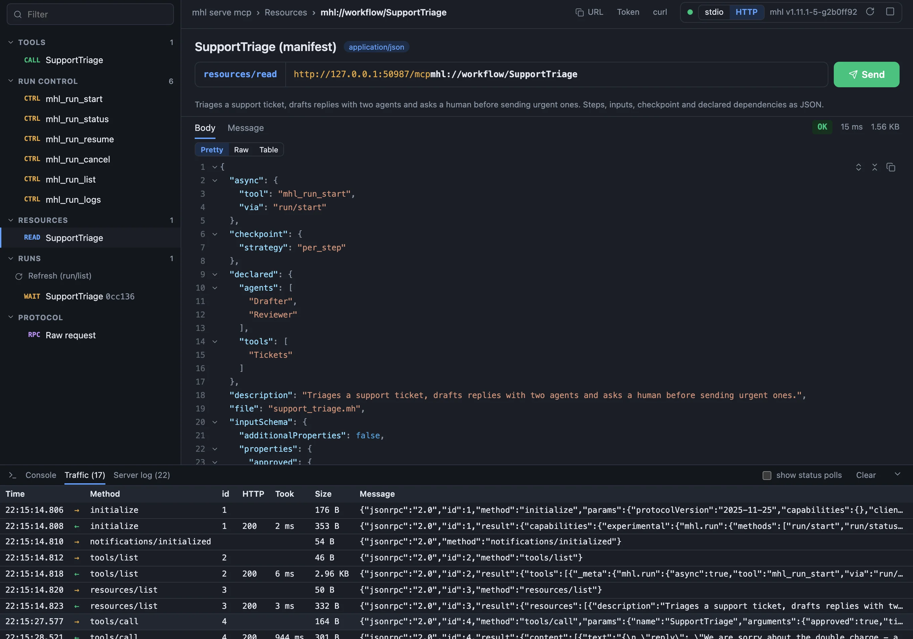
- Async runs (HTTP only). Switch a tool's method from
tools/calltorun/start: it returns at once and the run is followed under Runs — progress, the steps reached, its vars, logs and status. A paused run is resumed with new arguments (run/resume); a running one can be cancelled. - Console. Traffic lists every JSON-RPC message with its status, time and size (status polls are hidden unless you ask for them); Server log is the server's own output.
- Saved files only. The server reads the files on disk when it starts. The bench flags unsaved files and offers a restart after a save.
12The example on this page
AvailableEvery screenshot above is the same small folder, support-desk/. Its two agents are shell commands standing in for model CLIs, so it runs offline — swap their command/args for claude, codex, … to use real ones.
support_triage.mh
import { Drafter, Reviewer } from "./agents/assistants.mh"
import { Tickets } from "./tools/tickets.mh"
workflow SupportTriage {
description: "Triages a support ticket, drafts replies with two agents and asks a human before sending urgent ones."
input ticket: string = "URGENT: my invoice was charged twice, please refund"
input approved: bool = false
var text = ""
var urgency = 0
var drafts = []
var reply = ""
output: {
reply: reply,
urgency: urgency
}
step Normalize {
text = Tickets.normalize(ticket)
urgency = Tickets.urgency(text)
log("urgency ${urgency} for: ${text}")
}
step Classify {
goto match Tickets.priority(urgency) {
"high" -> Draft
"low" -> AutoReply
_ -> fail("unknown priority")
}
}
parallel Draft timeout 2m {
step DraftEmpathetic {
self.drafts.append(Drafter.run(prompt: "Empathetic reply to: ${text}"))
}
step DraftConcise {
self.drafts.append(Reviewer.run(prompt: "Concise reply to: ${text}"))
}
merge (branches) {
self.drafts = [...branches.DraftEmpathetic.drafts, ...branches.DraftConcise.drafts]
self.reply = self.drafts[0].trim()
goto Approve
}
}
step AutoReply {
reply = "Thanks! We received your ticket and will get back to you soon."
goto Send
}
step Approve {
if (!approved) {
pause("urgent reply needs a human: ${reply}")
}
}
step Send {
log("sending: ${reply}")
complete()
}
}agents/assistants.mh
// Two local "assistants": shell commands standing in for real model CLIs,
// so the workflow runs offline. Swap `command`/`args` for claude, codex, ...
export agent Drafter {
command: "sh"
args: ["-c", "sleep 0.6; echo 'We are sorry about the double charge - a refund is on its way.'"]
}
export agent Reviewer {
command: "sh"
args: ["-c", "sleep 0.9; echo 'Refund issued. You will see it in 3-5 business days.'"]
}tools/tickets.mh
// Deterministic helpers the support workflow calls.
export tool Tickets {
normalize(text: string): string -> text.trim().to_lower()
urgency(text: string): number {
var score = 1
if (text.contains("urgent")) {
score += 2
}
if (text.contains("refund") || text.contains("charged")) {
score += 1
}
return score
}
priority(score: number, threshold: number = 3): string {
if (score >= threshold) {
return "high"
}
return "low"
}
}The same folder runs without the studio: mhl run support_triage.mh pauses at Approve, and --input approved=true (or --input "ticket=hello", which takes the AutoReply branch) runs it to the end.
13Known limits
Preview- Only transitions that are a whole line can be deleted on the diagram — a
goto, anif (…) goto, a single arm. The rest are edited in the code. - Linking a step to a route by dragging is not supported yet: write
goto Route(x)in the step. - Tool methods cannot be dragged onto the diagram yet, and the tool inspector opens for a tool created with + → Tool: call an existing tool's methods, and edit its methods, in the code.
- On Windows, cancel ends the run's processes at once; a resume re-runs the interrupted step.
- The installers are not code-signed yet, and there is no auto-update: download new versions from GitHub Releases.